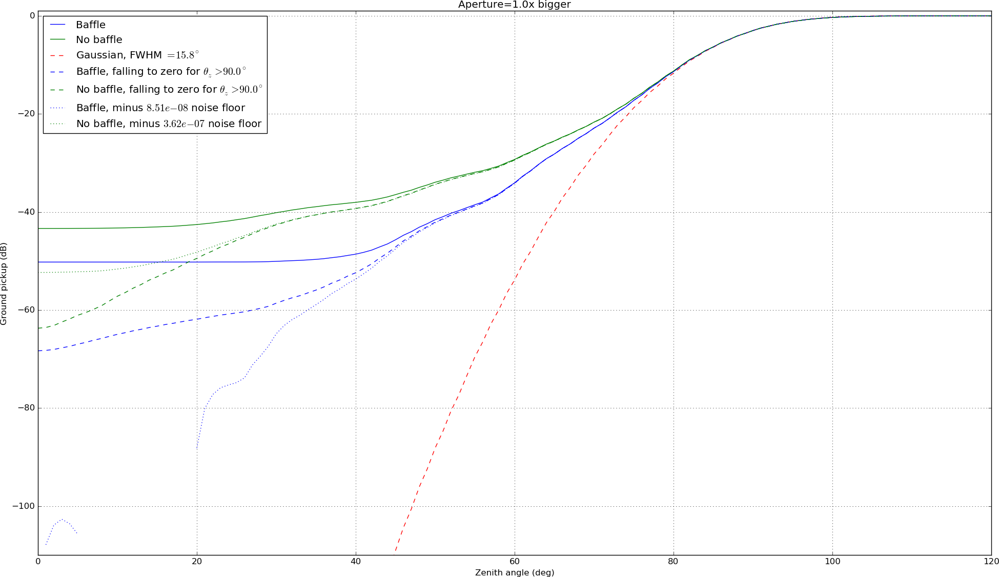

Looking at ways to reduce X-Horn's 90 degree sidelobes (and hence ground pickup). For angles greater than ~90 deg, the unbaffled profile looks like noise. The baffled profile has no data outside 90 deg. We try to subtract a nosie floor by taking the mean over the profile points at larger angles and subtracting it from the entire profile (in power units, not dB). For the baffled case, subtracting the noise floor essentially zeros the beam at high angles (since the baffled data is constant at those angles).
We might also suppose that the profile falls to zero. Did this by multiplying the profiles by a wide gaussian centered at zero but set to unity at some higher angle where we want the profile to begin falling to zero. This is a more optimistic estimate for ground pickup (fig. 2).
Finally, we look at the effect of varing aperture (and therefore the far-field pattern, according to lambda-over-d) on ground pickup. With an aperture twice as large, we get -60dB of pickup at a zenith angle of 45 deg for both reduced-sidelobe models of the baffled beam, but not for any of the unbaffled beams.
Beam profiles with sidelobe reducing modifications, shown over 3 apertures. The noise floor subtracted points are off-screen for the baffled beam, because the beam is assumed to be constant at higher angles for lack of data.
| 1x | 1.5x | 2x |
|---|---|---|
Ground pickup obtained by convolving the beams with the ground over a range of 120 degrees of zenith angles. Note that the desired attenuation of -60dB at 45 deg (which equates to ~10^3 attenuation between atmospheric temp and ground temp) is obtained for the baffled beam with both sidelobe reduction assumptions and twice the current aperture.
| 1x | 1.5x | 2x |
|---|---|---|
|  |
{kind=link}
{kind=link}
{kind=link}
{kind=link}
{kind=link}
{kind=link}